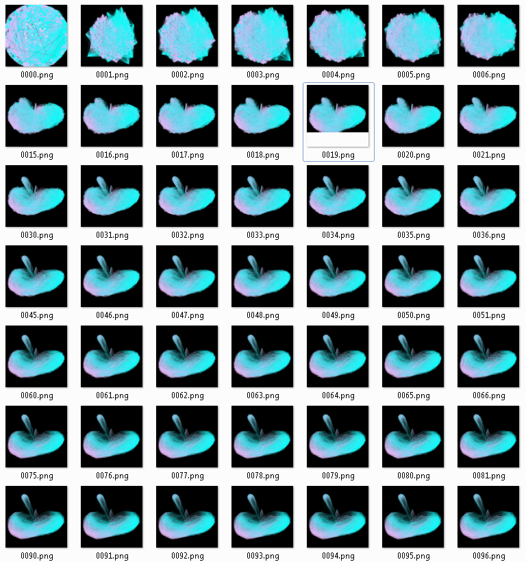
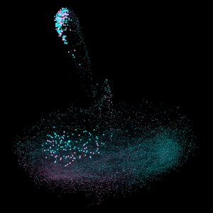

I thought I’d give a brief overview of the process I’ve been using to build the Gephi network animations I’ve been posting recently. It’s pretty crude, right now–basically you just run a layout or transformation for a single tick and then export an image. If you want to slow it down, you have to slow down the layout algorithm itself (for instance, in ForceAtlas2 this is the jitter, accessed through the layout.setJitterTolerance(new Double(dbl)) method) or do so in post-processing. It seems that the layout settings need to be re-initialized with each tick, though I’m not sure if this is layout-specific or a bug.

As it stands, I simply population a folder with high resolution images and then use Quicktime to turn those into HD animations. At some point, I'm sure that last half can also be automated, at least for the draft animations.
Once I clean up the code and make some of it less of a hack and more generic, I’ll put it on GitHub. My hope is to have a standard frame-by-frame animation method that accepts a graph, a layout, layout settings and a duration, as well as a few interesting animated methods for highlighting network features. For instance, rather than zooming in and out of the network as one would do with a traditional map or image, I thought it would be more useful to zoom into the network based on the topological location of the node within the network, what I’ve been calling an EgoZoom since it simply goes from Max Ego Network down to Ego Network 0 (or whatever you choose) of the node in question, so that you can see not merely what’s near the node visually, but what’s near it topologically. Matt Jockers, a sort of data visualization wunderkind here at Stanford, suggested a wave method that flows through the network based on the requested categorical or range value (it makes more sense when it’s seen) to attempt to highlight node attributes–for instance, one could highlight the date value of nodes in chronological order to remind or reinforce the temporal quality of the network.


An example of an Ego Zoom--the node being zoomed in on is in the cluster at the top but still has some connection to the main cluster in its 4th degree ego network.
I’m still not much of a Java coder, so I can’t guarantee it will be pretty or particularly well-written, but it should work. And who knows, with most of Gephi seemingly within an hour of Stanford right now, I may even get some kind of GUI-driven plugin put together.